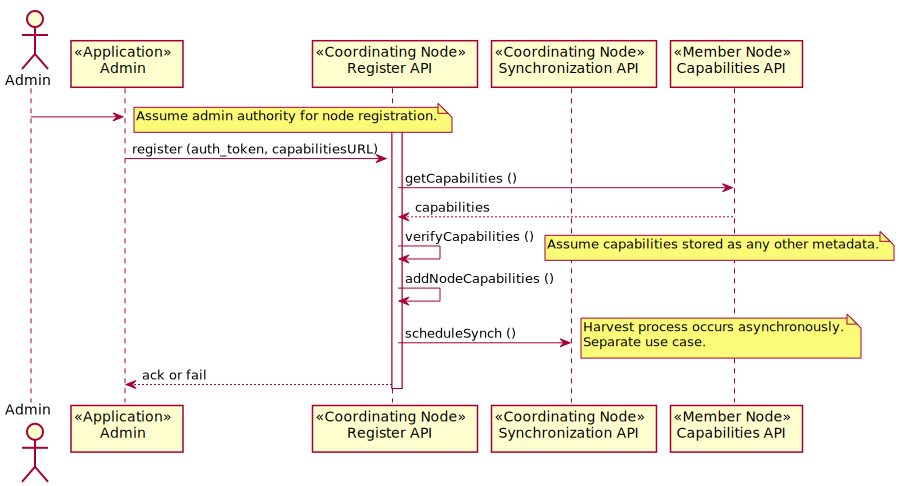

Use Case 03 - Register MN¶
- Revisions
View document revision history.
- Goal
Register a new Member Node.
- Summary
This use case describes the technical process for addition of a new member node (MN) to to the DataONE infrastructure. It is assumed that the appropriate social contracts have been formed and the MN is operational, ready to be connected.
The MN is identified by a URL which is the service endpoint. A DataONE administrator adds the MN URL to the MN registry. A CN retrieves the registration request from the message queue and queries the MN for capabilities, then verifies those capabilities match what was advertised. If everything is OK, the MN is made a live member of DataONE and replication of content on the MN is scheduled. The new MN also becomes a receiver for content replicated from other MNs.
- Actors
MN, CN, Administrator
- Preconditions
The MN is operational
There is an agreement between the DataONE operators and the MN operator that the MN is to be added to DataONE
The CNs are ready for receiving MN registrations
- Triggers
A new Member Node is ready to be brought online and a DataONE administrator initiates the process.
- Post Conditions
The new MN operates as part of the DataONE infrastructure
DataONE infrastructure resources are incremented by the amount available at the new MN
The operation outcomes are logged
Synchronization of the MN commences as per scheduled operation
Synchronize capabilities metadata across CNs
Notify MN administrators of operation status (email?)
The new MN is added to CN list of targets for replication
Figure 1. Use Case 03.
Figure 2. Sequence diagram for use case 03.
Notes
Specify default replication policies
Also check for version updates
Should new nodes be registered with specified trust levels?
Are there different levels of trust for member nodes?
Data providers that use acceptable services can still be discovered and accessed without registering in the DataONE registry (Conflicting, as someone has to register it).
However, a MN that has not registered but does expose DataONE services is not part of the DataONE infrastructure and so does not participate in replication or other DataONE services.
Allow service providers to register their services, (such as data extraction services) (ala GEOSS), but include mapping to higher semantic model
For well known services, registration system must be able to describe constraints (e.g., allowable inputs, outputs, algorithms that can be specified)
Services can be parameterized
Member node should be able to request the coordinating node to re-validate its capabilities list.